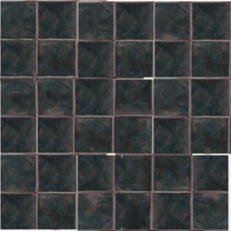
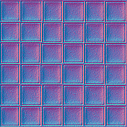
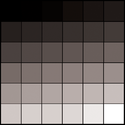
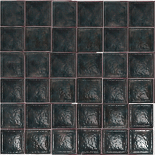
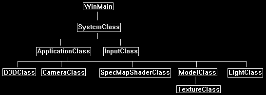
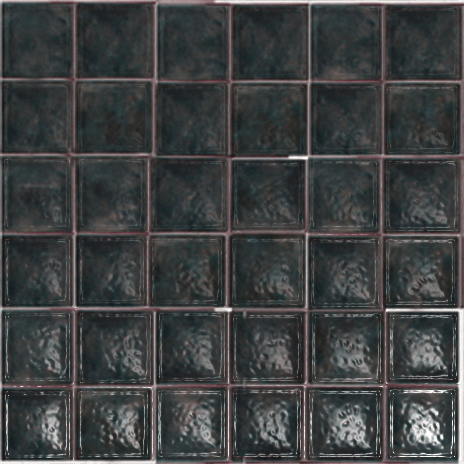

This tutorial will cover how to implement specular mapping in DirectX 11 using HLSL as well as how to combine it with normal mapping.
The code in this tutorial is a combination of the code in the normal map tutorial and the specular lighting tutorial.
Specular mapping is the process of using a texture or alpha layer of a texture as a look up table for per-pixel specular lighting intensity.
This process is identical to how light mapping works except that it is used for specular highlights instead.
For example, we may use a color texture as follows:

And a normal map for the texture as follows:

And then we will introduce the new specular map texture for specular light intensity such as follows:

We use the grey scale in the specular map to determine the intensity of specular light at each pixel.
Notice the image will allow each square on the base image to have its own specular intensity.
And since the image is normal mapped, it will highlight the bumps giving a very realistic surface such as the following:

Framework
The frame work has only changed slightly since the previous tutorial. It now has a SpecMapShaderClass instead of a NormalMapShaderClass.

We will start the tutorial by looking at the specular map HLSL shader code:
Specmap.vs
////////////////////////////////////////////////////////////////////////////////
// Filename: specmap.vs
////////////////////////////////////////////////////////////////////////////////
/////////////
// GLOBALS //
/////////////
cbuffer MatrixBuffer
{
matrix worldMatrix;
matrix viewMatrix;
matrix projectionMatrix;
};
The shader uses specular lighting so you will see the cameraPosition and viewDirection are used as inputs in the shader again, along with all the normal mapping variables from the previous tutorial.
cbuffer CameraBuffer
{
float3 cameraPosition;
float padding;
};
//////////////
// TYPEDEFS //
//////////////
struct VertexInputType
{
float4 position : POSITION;
float2 tex : TEXCOORD0;
float3 normal : NORMAL;
float3 tangent : TANGENT;
float3 binormal : BINORMAL;
};
struct PixelInputType
{
float4 position : SV_POSITION;
float2 tex : TEXCOORD0;
float3 normal : NORMAL;
float3 tangent : TANGENT;
float3 binormal : BINORMAL;
float3 viewDirection : TEXCOORD1;
};
////////////////////////////////////////////////////////////////////////////////
// Vertex Shader
////////////////////////////////////////////////////////////////////////////////
PixelInputType SpecMapVertexShader(VertexInputType input)
{
PixelInputType output;
float4 worldPosition;
// Change the position vector to be 4 units for proper matrix calculations.
input.position.w = 1.0f;
// Calculate the position of the vertex against the world, view, and projection matrices.
output.position = mul(input.position, worldMatrix);
output.position = mul(output.position, viewMatrix);
output.position = mul(output.position, projectionMatrix);
// Store the texture coordinates for the pixel shader.
output.tex = input.tex;
// Calculate the normal vector against the world matrix only and then normalize the final value.
output.normal = mul(input.normal, (float3x3)worldMatrix);
output.normal = normalize(output.normal);
// Calculate the tangent vector against the world matrix only and then normalize the final value.
output.tangent = mul(input.tangent, (float3x3)worldMatrix);
output.tangent = normalize(output.tangent);
// Calculate the binormal vector against the world matrix only and then normalize the final value.
output.binormal = mul(input.binormal, (float3x3)worldMatrix);
output.binormal = normalize(output.binormal);
For specular lighting calculations we will need the view direction calculated and passed into the pixel shader.
// Calculate the position of the vertex in the world.
worldPosition = mul(input.position, worldMatrix);
// Determine the viewing direction based on the position of the camera and the position of the vertex in the world.
output.viewDirection = cameraPosition.xyz - worldPosition.xyz;
// Normalize the viewing direction vector.
output.viewDirection = normalize(output.viewDirection);
return output;
}
Specmap.ps
////////////////////////////////////////////////////////////////////////////////
// Filename: specmap.ps
////////////////////////////////////////////////////////////////////////////////
/////////////
// GLOBALS //
/////////////
The specular map shader requires three textures.
The first texture is the color texture.
The second texture is the normal map.
And the third texture is the specular map.
Texture2D shaderTexture1 : register(t0);
Texture2D shaderTexture2 : register(t1);
Texture2D shaderTexture3 : register(t2);
SamplerState SampleType : register(s0);
The specular lighting variables specularColor and specularPower are added to this shader.
cbuffer LightBuffer
{
float4 diffuseColor;
float4 specularColor;
float specularPower;
float3 lightDirection;
};
The PixelInputType has the viewDirection added for specular calculations, along with the normal mapping inputs from the previous tutorial.
//////////////
// TYPEDEFS //
//////////////
struct PixelInputType
{
float4 position : SV_POSITION;
float2 tex : TEXCOORD0;
float3 normal : NORMAL;
float3 tangent : TANGENT;
float3 binormal : BINORMAL;
float3 viewDirection : TEXCOORD1;
};
////////////////////////////////////////////////////////////////////////////////
// Pixel Shader
////////////////////////////////////////////////////////////////////////////////
float4 SpecMapPixelShader(PixelInputType input) : SV_TARGET
{
float4 textureColor;
float4 bumpMap;
float3 bumpNormal;
float3 lightDir;
float lightIntensity;
float4 color;
float4 specularIntensity;
float3 reflection;
float4 specular;
The first part of the shader is the regular normal map shader code from the previous tutorial.
// Sample the pixel color from the color texture at this location.
textureColor = shaderTexture1.Sample(SampleType, input.tex);
// Sample the pixel from the normal map.
bumpMap = shaderTexture2.Sample(SampleType, input.tex);
// Expand the range of the normal value from (0, +1) to (-1, +1).
bumpMap = (bumpMap * 2.0f) - 1.0f;
// Calculate the normal from the data in the normal map.
bumpNormal = (bumpMap.x * input.tangent) + (bumpMap.y * input.binormal) + (bumpMap.z * input.normal);
// Normalize the resulting bump normal.
bumpNormal = normalize(bumpNormal);
// Invert the light direction for calculations.
lightDir = -lightDirection;
// Calculate the amount of light on this pixel based on the normal map value.
lightIntensity = saturate(dot(bumpNormal, lightDir));
// Determine the final amount of diffuse color based on the diffuse color combined with the light intensity.
color = saturate(diffuseColor * lightIntensity);
// Combine the final light color with the texture color.
color = color * textureColor;
If the light intensity is greater than zero, we will do specular light calculations.
if(lightIntensity > 0.0f)
{
Here is the key part where we sample the specular map texture for the intensity of specular light at this pixel.
// Sample the pixel from the specular map texture.
specularIntensity = shaderTexture3.Sample(SampleType, input.tex);
The next important part is we have changed the specular reflection calculation to use the normal map instead of the regular input normal.
This way the specular will work off the bumps from the normal map instead of the smooth surface from just the regular normal value.
// Calculate the reflection vector based on the light intensity, normal vector, and light direction.
reflection = normalize(2 * lightIntensity * bumpNormal - lightDir);
// Determine the amount of specular light based on the reflection vector, viewing direction, and specular power.
specular = pow(saturate(dot(reflection, input.viewDirection)), specularPower);
Now that we have the amount of specular light at this pixel, we then multiply it by the specular intensity from the specular map to get a final value.
// Use the specular map to determine the intensity of specular light at this pixel.
specular = specular * specularIntensity;
// Add the specular component last to the output color.
color = saturate(color + specular);
}
return color;
}
Specmapshaderclass.h
The SpecMapShaderClass is just the NormalMapShaderClass modified slightly from the previous tutorial.
////////////////////////////////////////////////////////////////////////////////
// Filename: specmapshaderclass.h
////////////////////////////////////////////////////////////////////////////////
#ifndef _SPECMAPSHADERCLASS_H_
#define _SPECMAPSHADERCLASS_H_
//////////////
// INCLUDES //
//////////////
#include <d3d11.h>
#include <d3dcompiler.h>
#include <directxmath.h>
#include <fstream>
using namespace DirectX;
using namespace std;
////////////////////////////////////////////////////////////////////////////////
// Class name: SpecMapShaderClass
////////////////////////////////////////////////////////////////////////////////
class SpecMapShaderClass
{
private:
struct MatrixBufferType
{
XMMATRIX world;
XMMATRIX view;
XMMATRIX projection;
};
We will need structures for the light buffer and camera buffer.
struct LightBufferType
{
XMFLOAT4 diffuseColor;
XMFLOAT4 specularColor;
float specularPower;
XMFLOAT3 lightDirection;
};
struct CameraBufferType
{
XMFLOAT3 cameraPosition;
float padding;
};
public:
SpecMapShaderClass();
SpecMapShaderClass(const SpecMapShaderClass&);
~SpecMapShaderClass();
bool Initialize(ID3D11Device*, HWND);
void Shutdown();
bool Render(ID3D11DeviceContext*, int, XMMATRIX, XMMATRIX, XMMATRIX, ID3D11ShaderResourceView*, ID3D11ShaderResourceView*, ID3D11ShaderResourceView*,
XMFLOAT3, XMFLOAT4, XMFLOAT3, XMFLOAT4, float);
private:
bool InitializeShader(ID3D11Device*, HWND, WCHAR*, WCHAR*);
void ShutdownShader();
void OutputShaderErrorMessage(ID3D10Blob*, HWND, WCHAR*);
bool SetShaderParameters(ID3D11DeviceContext*, XMMATRIX, XMMATRIX, XMMATRIX, ID3D11ShaderResourceView*, ID3D11ShaderResourceView*, ID3D11ShaderResourceView*,
XMFLOAT3, XMFLOAT4, XMFLOAT3, XMFLOAT4, float);
void RenderShader(ID3D11DeviceContext*, int);
private:
ID3D11VertexShader* m_vertexShader;
ID3D11PixelShader* m_pixelShader;
ID3D11InputLayout* m_layout;
ID3D11Buffer* m_matrixBuffer;
ID3D11SamplerState* m_sampleState;
We have added the camera direction and light information buffers for the specular light calculations that will occur in the HLSL shader.
ID3D11Buffer* m_lightBuffer;
ID3D11Buffer* m_cameraBuffer;
};
#endif
Specmapshaderclass.cpp
////////////////////////////////////////////////////////////////////////////////
// Filename: specmapshaderclass.cpp
////////////////////////////////////////////////////////////////////////////////
#include "specmapshaderclass.h"
SpecMapShaderClass::SpecMapShaderClass()
{
m_vertexShader = 0;
m_pixelShader = 0;
m_layout = 0;
m_matrixBuffer = 0;
m_sampleState = 0;
Initialize the light and camera buffer to null in the class constructor.
m_lightBuffer = 0;
m_cameraBuffer = 0;
}
SpecMapShaderClass::SpecMapShaderClass(const SpecMapShaderClass& other)
{
}
SpecMapShaderClass::~SpecMapShaderClass()
{
}
bool SpecMapShaderClass::Initialize(ID3D11Device* device, HWND hwnd)
{
bool result;
wchar_t vsFilename[128];
wchar_t psFilename[128];
int error;
We load the specmap.vs and specmap.ps HLSL shader files here.
// Set the filename of the vertex shader.
error = wcscpy_s(vsFilename, 128, L"../Engine/specmap.vs");
if(error != 0)
{
return false;
}
// Set the filename of the pixel shader.
error = wcscpy_s(psFilename, 128, L"../Engine/specmap.ps");
if(error != 0)
{
return false;
}
// Initialize the vertex and pixel shaders.
result = InitializeShader(device, hwnd, vsFilename, psFilename);
if(!result)
{
return false;
}
return true;
}
void SpecMapShaderClass::Shutdown()
{
// Shutdown the vertex and pixel shaders as well as the related objects.
ShutdownShader();
return;
}
The Render function now takes in the camera position, specular light color, and specular power for the specular lighting calculations that will be done by the shader.
bool SpecMapShaderClass::Render(ID3D11DeviceContext* deviceContext, int indexCount, XMMATRIX worldMatrix, XMMATRIX viewMatrix, XMMATRIX projectionMatrix,
ID3D11ShaderResourceView* texture1, ID3D11ShaderResourceView* texture2, ID3D11ShaderResourceView* texture3,
XMFLOAT3 lightDirection, XMFLOAT4 diffuseColor, XMFLOAT3 cameraPosition, XMFLOAT4 specularColor, float specularPower)
{
bool result;
// Set the shader parameters that it will use for rendering.
result = SetShaderParameters(deviceContext, worldMatrix, viewMatrix, projectionMatrix, texture1, texture2, texture3, lightDirection, diffuseColor,
cameraPosition, specularColor, specularPower);
if(!result)
{
return false;
}
// Now render the prepared buffers with the shader.
RenderShader(deviceContext, indexCount);
return true;
}
bool SpecMapShaderClass::InitializeShader(ID3D11Device* device, HWND hwnd, WCHAR* vsFilename, WCHAR* psFilename)
{
HRESULT result;
ID3D10Blob* errorMessage;
ID3D10Blob* vertexShaderBuffer;
ID3D10Blob* pixelShaderBuffer;
D3D11_INPUT_ELEMENT_DESC polygonLayout[5];
unsigned int numElements;
D3D11_BUFFER_DESC matrixBufferDesc;
D3D11_SAMPLER_DESC samplerDesc;
D3D11_BUFFER_DESC lightBufferDesc;
D3D11_BUFFER_DESC cameraBufferDesc;
// Initialize the pointers this function will use to null.
errorMessage = 0;
vertexShaderBuffer = 0;
pixelShaderBuffer = 0;
Here we load the specular map vertex shader.
// Compile the vertex shader code.
result = D3DCompileFromFile(vsFilename, NULL, NULL, "SpecMapVertexShader", "vs_5_0", D3D10_SHADER_ENABLE_STRICTNESS, 0,
&vertexShaderBuffer, &errorMessage);
if(FAILED(result))
{
// If the shader failed to compile it should have writen something to the error message.
if(errorMessage)
{
OutputShaderErrorMessage(errorMessage, hwnd, vsFilename);
}
// If there was nothing in the error message then it simply could not find the shader file itself.
else
{
MessageBox(hwnd, vsFilename, L"Missing Shader File", MB_OK);
}
return false;
}
Here we load the specular map pixel shader.
// Compile the pixel shader code.
result = D3DCompileFromFile(psFilename, NULL, NULL, "SpecMapPixelShader", "ps_5_0", D3D10_SHADER_ENABLE_STRICTNESS, 0,
&pixelShaderBuffer, &errorMessage);
if(FAILED(result))
{
// If the shader failed to compile it should have writen something to the error message.
if(errorMessage)
{
OutputShaderErrorMessage(errorMessage, hwnd, psFilename);
}
// If there was nothing in the error message then it simply could not find the file itself.
else
{
MessageBox(hwnd, psFilename, L"Missing Shader File", MB_OK);
}
return false;
}
// Create the vertex shader from the buffer.
result = device->CreateVertexShader(vertexShaderBuffer->GetBufferPointer(), vertexShaderBuffer->GetBufferSize(), NULL, &m_vertexShader);
if(FAILED(result))
{
return false;
}
// Create the pixel shader from the buffer.
result = device->CreatePixelShader(pixelShaderBuffer->GetBufferPointer(), pixelShaderBuffer->GetBufferSize(), NULL, &m_pixelShader);
if(FAILED(result))
{
return false;
}
// Create the vertex input layout description.
polygonLayout[0].SemanticName = "POSITION";
polygonLayout[0].SemanticIndex = 0;
polygonLayout[0].Format = DXGI_FORMAT_R32G32B32_FLOAT;
polygonLayout[0].InputSlot = 0;
polygonLayout[0].AlignedByteOffset = 0;
polygonLayout[0].InputSlotClass = D3D11_INPUT_PER_VERTEX_DATA;
polygonLayout[0].InstanceDataStepRate = 0;
polygonLayout[1].SemanticName = "TEXCOORD";
polygonLayout[1].SemanticIndex = 0;
polygonLayout[1].Format = DXGI_FORMAT_R32G32_FLOAT;
polygonLayout[1].InputSlot = 0;
polygonLayout[1].AlignedByteOffset = D3D11_APPEND_ALIGNED_ELEMENT;
polygonLayout[1].InputSlotClass = D3D11_INPUT_PER_VERTEX_DATA;
polygonLayout[1].InstanceDataStepRate = 0;
polygonLayout[2].SemanticName = "NORMAL";
polygonLayout[2].SemanticIndex = 0;
polygonLayout[2].Format = DXGI_FORMAT_R32G32B32_FLOAT;
polygonLayout[2].InputSlot = 0;
polygonLayout[2].AlignedByteOffset = D3D11_APPEND_ALIGNED_ELEMENT;
polygonLayout[2].InputSlotClass = D3D11_INPUT_PER_VERTEX_DATA;
polygonLayout[2].InstanceDataStepRate = 0;
polygonLayout[3].SemanticName = "TANGENT";
polygonLayout[3].SemanticIndex = 0;
polygonLayout[3].Format = DXGI_FORMAT_R32G32B32_FLOAT;
polygonLayout[3].InputSlot = 0;
polygonLayout[3].AlignedByteOffset = D3D11_APPEND_ALIGNED_ELEMENT;
polygonLayout[3].InputSlotClass = D3D11_INPUT_PER_VERTEX_DATA;
polygonLayout[3].InstanceDataStepRate = 0;
polygonLayout[4].SemanticName = "BINORMAL";
polygonLayout[4].SemanticIndex = 0;
polygonLayout[4].Format = DXGI_FORMAT_R32G32B32_FLOAT;
polygonLayout[4].InputSlot = 0;
polygonLayout[4].AlignedByteOffset = D3D11_APPEND_ALIGNED_ELEMENT;
polygonLayout[4].InputSlotClass = D3D11_INPUT_PER_VERTEX_DATA;
polygonLayout[4].InstanceDataStepRate = 0;
// Get a count of the elements in the layout.
numElements = sizeof(polygonLayout) / sizeof(polygonLayout[0]);
// Create the vertex input layout.
result = device->CreateInputLayout(polygonLayout, numElements, vertexShaderBuffer->GetBufferPointer(),
vertexShaderBuffer->GetBufferSize(), &m_layout);
if(FAILED(result))
{
return false;
}
// Release the vertex shader buffer and pixel shader buffer since they are no longer needed.
vertexShaderBuffer->Release();
vertexShaderBuffer = 0;
pixelShaderBuffer->Release();
pixelShaderBuffer = 0;
// Setup the description of the dynamic matrix constant buffer that is in the vertex shader.
matrixBufferDesc.Usage = D3D11_USAGE_DYNAMIC;
matrixBufferDesc.ByteWidth = sizeof(MatrixBufferType);
matrixBufferDesc.BindFlags = D3D11_BIND_CONSTANT_BUFFER;
matrixBufferDesc.CPUAccessFlags = D3D11_CPU_ACCESS_WRITE;
matrixBufferDesc.MiscFlags = 0;
matrixBufferDesc.StructureByteStride = 0;
// Create the constant buffer pointer so we can access the vertex shader constant buffer from within this class.
result = device->CreateBuffer(&matrixBufferDesc, NULL, &m_matrixBuffer);
if(FAILED(result))
{
return false;
}
// Create a texture sampler state description.
samplerDesc.Filter = D3D11_FILTER_MIN_MAG_MIP_LINEAR;
samplerDesc.AddressU = D3D11_TEXTURE_ADDRESS_WRAP;
samplerDesc.AddressV = D3D11_TEXTURE_ADDRESS_WRAP;
samplerDesc.AddressW = D3D11_TEXTURE_ADDRESS_WRAP;
samplerDesc.MipLODBias = 0.0f;
samplerDesc.MaxAnisotropy = 1;
samplerDesc.ComparisonFunc = D3D11_COMPARISON_ALWAYS;
samplerDesc.BorderColor[0] = 0;
samplerDesc.BorderColor[1] = 0;
samplerDesc.BorderColor[2] = 0;
samplerDesc.BorderColor[3] = 0;
samplerDesc.MinLOD = 0;
samplerDesc.MaxLOD = D3D11_FLOAT32_MAX;
// Create the texture sampler state.
result = device->CreateSamplerState(&samplerDesc, &m_sampleState);
if(FAILED(result))
{
return false;
}
The light and camera buffers are setup here.
// Setup the description of the light dynamic constant buffer that is in the pixel shader.
lightBufferDesc.Usage = D3D11_USAGE_DYNAMIC;
lightBufferDesc.ByteWidth = sizeof(LightBufferType);
lightBufferDesc.BindFlags = D3D11_BIND_CONSTANT_BUFFER;
lightBufferDesc.CPUAccessFlags = D3D11_CPU_ACCESS_WRITE;
lightBufferDesc.MiscFlags = 0;
lightBufferDesc.StructureByteStride = 0;
// Create the constant buffer pointer so we can access the vertex shader constant buffer from within this class.
result = device->CreateBuffer(&lightBufferDesc, NULL, &m_lightBuffer);
if(FAILED(result))
{
return false;
}
// Setup the description of the camera dynamic constant buffer that is in the vertex shader.
cameraBufferDesc.Usage = D3D11_USAGE_DYNAMIC;
cameraBufferDesc.ByteWidth = sizeof(CameraBufferType);
cameraBufferDesc.BindFlags = D3D11_BIND_CONSTANT_BUFFER;
cameraBufferDesc.CPUAccessFlags = D3D11_CPU_ACCESS_WRITE;
cameraBufferDesc.MiscFlags = 0;
cameraBufferDesc.StructureByteStride = 0;
// Create the camera constant buffer pointer so we can access the vertex shader constant buffer from within this class.
result = device->CreateBuffer(&cameraBufferDesc, NULL, &m_cameraBuffer);
if(FAILED(result))
{
return false;
}
return true;
}
void SpecMapShaderClass::ShutdownShader()
{
The new light and camera buffers related to specular light are released here in the ShutdownShader function.
// Release the camera constant buffer.
if(m_cameraBuffer)
{
m_cameraBuffer->Release();
m_cameraBuffer = 0;
}
// Release the light constant buffer.
if(m_lightBuffer)
{
m_lightBuffer->Release();
m_lightBuffer = 0;
}
// Release the sampler state.
if(m_sampleState)
{
m_sampleState->Release();
m_sampleState = 0;
}
// Release the matrix constant buffer.
if(m_matrixBuffer)
{
m_matrixBuffer->Release();
m_matrixBuffer = 0;
}
// Release the layout.
if(m_layout)
{
m_layout->Release();
m_layout = 0;
}
// Release the pixel shader.
if(m_pixelShader)
{
m_pixelShader->Release();
m_pixelShader = 0;
}
// Release the vertex shader.
if(m_vertexShader)
{
m_vertexShader->Release();
m_vertexShader = 0;
}
return;
}
void SpecMapShaderClass::OutputShaderErrorMessage(ID3D10Blob* errorMessage, HWND hwnd, WCHAR* shaderFilename)
{
char* compileErrors;
unsigned long long bufferSize, i;
ofstream fout;
// Get a pointer to the error message text buffer.
compileErrors = (char*)(errorMessage->GetBufferPointer());
// Get the length of the message.
bufferSize = errorMessage->GetBufferSize();
// Open a file to write the error message to.
fout.open("shader-error.txt");
// Write out the error message.
for(i=0; i<bufferSize; i++)
{
fout << compileErrors[i];
}
// Close the file.
fout.close();
// Release the error message.
errorMessage->Release();
errorMessage = 0;
// Pop a message up on the screen to notify the user to check the text file for compile errors.
MessageBox(hwnd, L"Error compiling shader. Check shader-error.txt for message.", shaderFilename, MB_OK);
return;
}
SetShaderParameters now takes in three textures, the camera position, the specular light color, and the specular power.
bool SpecMapShaderClass::SetShaderParameters(ID3D11DeviceContext* deviceContext, XMMATRIX worldMatrix, XMMATRIX viewMatrix, XMMATRIX projectionMatrix,
ID3D11ShaderResourceView* texture1, ID3D11ShaderResourceView* texture2, ID3D11ShaderResourceView* texture3,
XMFLOAT3 lightDirection, XMFLOAT4 diffuseColor, XMFLOAT3 cameraPosition, XMFLOAT4 specularColor, float specularPower)
{
HRESULT result;
D3D11_MAPPED_SUBRESOURCE mappedResource;
MatrixBufferType* dataPtr;
unsigned int bufferNumber;
LightBufferType* dataPtr2;
CameraBufferType* dataPtr3;
// Transpose the matrices to prepare them for the shader.
worldMatrix = XMMatrixTranspose(worldMatrix);
viewMatrix = XMMatrixTranspose(viewMatrix);
projectionMatrix = XMMatrixTranspose(projectionMatrix);
// Lock the constant buffer so it can be written to.
result = deviceContext->Map(m_matrixBuffer, 0, D3D11_MAP_WRITE_DISCARD, 0, &mappedResource);
if(FAILED(result))
{
return false;
}
// Get a pointer to the data in the constant buffer.
dataPtr = (MatrixBufferType*)mappedResource.pData;
// Copy the matrices into the constant buffer.
dataPtr->world = worldMatrix;
dataPtr->view = viewMatrix;
dataPtr->projection = projectionMatrix;
// Unlock the constant buffer.
deviceContext->Unmap(m_matrixBuffer, 0);
// Set the position of the constant buffer in the vertex shader.
bufferNumber = 0;
// Finally set the constant buffer in the vertex shader with the updated values.
deviceContext->VSSetConstantBuffers(bufferNumber, 1, &m_matrixBuffer);
The color, normal map, and specular map textures are set inside the pixel shader here.
// Set shader texture resources in the pixel shader.
deviceContext->PSSetShaderResources(0, 1, &texture1);
deviceContext->PSSetShaderResources(1, 1, &texture2);
deviceContext->PSSetShaderResources(2, 1, &texture3);
The light buffer is set here.
// Lock the light constant buffer so it can be written to.
result = deviceContext->Map(m_lightBuffer, 0, D3D11_MAP_WRITE_DISCARD, 0, &mappedResource);
if(FAILED(result))
{
return false;
}
// Get a pointer to the data in the constant buffer.
dataPtr2 = (LightBufferType*)mappedResource.pData;
// Copy the lighting variables into the constant buffer.
dataPtr2->diffuseColor = diffuseColor;
dataPtr2->lightDirection = lightDirection;
dataPtr2->specularColor = specularColor;
dataPtr2->specularPower = specularPower;
// Unlock the constant buffer.
deviceContext->Unmap(m_lightBuffer, 0);
// Set the position of the light constant buffer in the pixel shader.
bufferNumber = 0;
// Finally set the light constant buffer in the pixel shader with the updated values.
deviceContext->PSSetConstantBuffers(bufferNumber, 1, &m_lightBuffer);
The camera buffer is set here.
// Lock the camera constant buffer so it can be written to.
result = deviceContext->Map(m_cameraBuffer, 0, D3D11_MAP_WRITE_DISCARD, 0, &mappedResource);
if(FAILED(result))
{
return false;
}
// Get a pointer to the data in the constant buffer.
dataPtr3 = (CameraBufferType*)mappedResource.pData;
// Copy the camera position into the constant buffer.
dataPtr3->cameraPosition = cameraPosition;
// Unlock the camera constant buffer.
deviceContext->Unmap(m_cameraBuffer, 0);
// Set the position of the camera constant buffer in the vertex shader as the second buffer.
bufferNumber = 1;
// Now set the camera constant buffer in the vertex shader with the updated values.
deviceContext->VSSetConstantBuffers(bufferNumber, 1, &m_cameraBuffer);
return true;
}
void SpecMapShaderClass::RenderShader(ID3D11DeviceContext* deviceContext, int indexCount)
{
// Set the vertex input layout.
deviceContext->IASetInputLayout(m_layout);
// Set the vertex and pixel shaders that will be used to render this model.
deviceContext->VSSetShader(m_vertexShader, NULL, 0);
deviceContext->PSSetShader(m_pixelShader, NULL, 0);
// Set the sampler state in the pixel shader.
deviceContext->PSSetSamplers(0, 1, &m_sampleState);
// Render the model.
deviceContext->DrawIndexed(indexCount, 0, 0);
return;
}
Modelclass.h
The ModelClass has been updated since the last tutorial to add a third texture for the specular map.
////////////////////////////////////////////////////////////////////////////////
// Filename: modelclass.h
////////////////////////////////////////////////////////////////////////////////
#ifndef _MODELCLASS_H_
#define _MODELCLASS_H_
//////////////
// INCLUDES //
//////////////
#include <d3d11.h>
#include <directxmath.h>
#include <fstream>
using namespace DirectX;
using namespace std;
///////////////////////
// MY CLASS INCLUDES //
///////////////////////
#include "textureclass.h"
////////////////////////////////////////////////////////////////////////////////
// Class name: ModelClass
////////////////////////////////////////////////////////////////////////////////
class ModelClass
{
private:
struct VertexType
{
XMFLOAT3 position;
XMFLOAT2 texture;
XMFLOAT3 normal;
XMFLOAT3 tangent;
XMFLOAT3 binormal;
};
struct ModelType
{
float x, y, z;
float tu, tv;
float nx, ny, nz;
float tx, ty, tz;
float bx, by, bz;
};
struct TempVertexType
{
float x, y, z;
float tu, tv;
float nx, ny, nz;
};
struct VectorType
{
float x, y, z;
};
public:
ModelClass();
ModelClass(const ModelClass&);
~ModelClass();
bool Initialize(ID3D11Device*, ID3D11DeviceContext*, char*, char*, char*, char*);
void Shutdown();
void Render(ID3D11DeviceContext*);
int GetIndexCount();
ID3D11ShaderResourceView* GetTexture(int);
private:
bool InitializeBuffers(ID3D11Device*);
void ShutdownBuffers();
void RenderBuffers(ID3D11DeviceContext*);
bool LoadTextures(ID3D11Device*, ID3D11DeviceContext*, char*, char*, char*);
void ReleaseTextures();
bool LoadModel(char*);
void ReleaseModel();
void CalculateModelVectors();
void CalculateTangentBinormal(TempVertexType, TempVertexType, TempVertexType, VectorType&, VectorType&);
private:
ID3D11Buffer *m_vertexBuffer, *m_indexBuffer;
int m_vertexCount, m_indexCount;
TextureClass* m_Textures;
ModelType* m_model;
};
#endif
Modelclass.cpp
////////////////////////////////////////////////////////////////////////////////
// Filename: modelclass.cpp
////////////////////////////////////////////////////////////////////////////////
#include "modelclass.h"
ModelClass::ModelClass()
{
m_vertexBuffer = 0;
m_indexBuffer = 0;
m_Textures = 0;
m_model = 0;
}
ModelClass::ModelClass(const ModelClass& other)
{
}
ModelClass::~ModelClass()
{
}
bool ModelClass::Initialize(ID3D11Device* device, ID3D11DeviceContext* deviceContext, char* modelFilename, char* textureFilename1, char* textureFilename2, char* textureFilename3)
{
bool result;
// Load in the model data.
result = LoadModel(modelFilename);
if(!result)
{
return false;
}
// Calculate the tangent and binormal vectors for the model.
CalculateModelVectors();
// Initialize the vertex and index buffers.
result = InitializeBuffers(device);
if(!result)
{
return false;
}
// Load the textures for this model.
result = LoadTextures(device, deviceContext, textureFilename1, textureFilename2, textureFilename3);
if(!result)
{
return false;
}
return true;
}
void ModelClass::Shutdown()
{
// Release the model textures.
ReleaseTextures();
// Shutdown the vertex and index buffers.
ShutdownBuffers();
// Release the model data.
ReleaseModel();
return;
}
void ModelClass::Render(ID3D11DeviceContext* deviceContext)
{
// Put the vertex and index buffers on the graphics pipeline to prepare them for drawing.
RenderBuffers(deviceContext);
return;
}
int ModelClass::GetIndexCount()
{
return m_indexCount;
}
ID3D11ShaderResourceView* ModelClass::GetTexture(int index)
{
return m_Textures[index].GetTexture();
}
bool ModelClass::InitializeBuffers(ID3D11Device* device)
{
VertexType* vertices;
unsigned long* indices;
D3D11_BUFFER_DESC vertexBufferDesc, indexBufferDesc;
D3D11_SUBRESOURCE_DATA vertexData, indexData;
HRESULT result;
int i;
// Create the vertex array.
vertices = new VertexType[m_vertexCount];
// Create the index array.
indices = new unsigned long[m_indexCount];
// Load the vertex array and index array with data.
for(i=0; i<m_vertexCount; i++)
{
vertices[i].position = XMFLOAT3(m_model[i].x, m_model[i].y, m_model[i].z);
vertices[i].texture = XMFLOAT2(m_model[i].tu, m_model[i].tv);
vertices[i].normal = XMFLOAT3(m_model[i].nx, m_model[i].ny, m_model[i].nz);
vertices[i].tangent = XMFLOAT3(m_model[i].tx, m_model[i].ty, m_model[i].tz);
vertices[i].binormal = XMFLOAT3(m_model[i].bx, m_model[i].by, m_model[i].bz);
indices[i] = i;
}
// Set up the description of the static vertex buffer.
vertexBufferDesc.Usage = D3D11_USAGE_DEFAULT;
vertexBufferDesc.ByteWidth = sizeof(VertexType) * m_vertexCount;
vertexBufferDesc.BindFlags = D3D11_BIND_VERTEX_BUFFER;
vertexBufferDesc.CPUAccessFlags = 0;
vertexBufferDesc.MiscFlags = 0;
vertexBufferDesc.StructureByteStride = 0;
// Give the subresource structure a pointer to the vertex data.
vertexData.pSysMem = vertices;
vertexData.SysMemPitch = 0;
vertexData.SysMemSlicePitch = 0;
// Now create the vertex buffer.
result = device->CreateBuffer(&vertexBufferDesc, &vertexData, &m_vertexBuffer);
if(FAILED(result))
{
return false;
}
// Set up the description of the static index buffer.
indexBufferDesc.Usage = D3D11_USAGE_DEFAULT;
indexBufferDesc.ByteWidth = sizeof(unsigned long) * m_indexCount;
indexBufferDesc.BindFlags = D3D11_BIND_INDEX_BUFFER;
indexBufferDesc.CPUAccessFlags = 0;
indexBufferDesc.MiscFlags = 0;
indexBufferDesc.StructureByteStride = 0;
// Give the subresource structure a pointer to the index data.
indexData.pSysMem = indices;
indexData.SysMemPitch = 0;
indexData.SysMemSlicePitch = 0;
// Create the index buffer.
result = device->CreateBuffer(&indexBufferDesc, &indexData, &m_indexBuffer);
if(FAILED(result))
{
return false;
}
// Release the arrays now that the vertex and index buffers have been created and loaded.
delete [] vertices;
vertices = 0;
delete [] indices;
indices = 0;
return true;
}
void ModelClass::ShutdownBuffers()
{
// Release the index buffer.
if(m_indexBuffer)
{
m_indexBuffer->Release();
m_indexBuffer = 0;
}
// Release the vertex buffer.
if(m_vertexBuffer)
{
m_vertexBuffer->Release();
m_vertexBuffer = 0;
}
return;
}
void ModelClass::RenderBuffers(ID3D11DeviceContext* deviceContext)
{
unsigned int stride;
unsigned int offset;
// Set vertex buffer stride and offset.
stride = sizeof(VertexType);
offset = 0;
// Set the vertex buffer to active in the input assembler so it can be rendered.
deviceContext->IASetVertexBuffers(0, 1, &m_vertexBuffer, &stride, &offset);
// Set the index buffer to active in the input assembler so it can be rendered.
deviceContext->IASetIndexBuffer(m_indexBuffer, DXGI_FORMAT_R32_UINT, 0);
// Set the type of primitive that should be rendered from this vertex buffer, in this case triangles.
deviceContext->IASetPrimitiveTopology(D3D11_PRIMITIVE_TOPOLOGY_TRIANGLELIST);
return;
}
bool ModelClass::LoadTextures(ID3D11Device* device, ID3D11DeviceContext* deviceContext, char* filename1, char* filename2, char* filename3)
{
bool result;
// Create and initialize the texture object array.
m_Textures = new TextureClass[3];
result = m_Textures[0].Initialize(device, deviceContext, filename1);
if(!result)
{
return false;
}
result = m_Textures[1].Initialize(device, deviceContext, filename2);
if(!result)
{
return false;
}
We set the new specular map texture here.
result = m_Textures[2].Initialize(device, deviceContext, filename3);
if(!result)
{
return false;
}
return true;
}
void ModelClass::ReleaseTextures()
{
// Release the texture object array.
if(m_Textures)
{
m_Textures[0].Shutdown();
m_Textures[1].Shutdown();
m_Textures[2].Shutdown();
delete [] m_Textures;
m_Textures = 0;
}
return;
}
bool ModelClass::LoadModel(char* filename)
{
ifstream fin;
char input;
int i;
// Open the model file.
fin.open(filename);
// If it could not open the file then exit.
if(fin.fail())
{
return false;
}
// Read up to the value of vertex count.
fin.get(input);
while (input != ':')
{
fin.get(input);
}
// Read in the vertex count.
fin >> m_vertexCount;
// Set the number of indices to be the same as the vertex count.
m_indexCount = m_vertexCount;
// Create the model using the vertex count that was read in.
m_model = new ModelType[m_vertexCount];
// Read up to the beginning of the data.
fin.get(input);
while (input != ':')
{
fin.get(input);
}
fin.get(input);
fin.get(input);
// Read in the vertex data.
for(i=0; i<m_vertexCount; i++)
{
fin >> m_model[i].x >> m_model[i].y >> m_model[i].z;
fin >> m_model[i].tu >> m_model[i].tv;
fin >> m_model[i].nx >> m_model[i].ny >> m_model[i].nz;
}
// Close the model file.
fin.close();
return true;
}
void ModelClass::ReleaseModel()
{
if(m_model)
{
delete [] m_model;
m_model = 0;
}
return;
}
void ModelClass::CalculateModelVectors()
{
int faceCount, i, index;
TempVertexType vertex1, vertex2, vertex3;
VectorType tangent, binormal;
// Calculate the number of faces in the model.
faceCount = m_vertexCount / 3;
// Initialize the index to the model data.
index = 0;
// Go through all the faces and calculate the the tangent and binormal vectors.
for(i=0; i<faceCount; i++)
{
// Get the three vertices for this face from the model.
vertex1.x = m_model[index].x;
vertex1.y = m_model[index].y;
vertex1.z = m_model[index].z;
vertex1.tu = m_model[index].tu;
vertex1.tv = m_model[index].tv;
index++;
vertex2.x = m_model[index].x;
vertex2.y = m_model[index].y;
vertex2.z = m_model[index].z;
vertex2.tu = m_model[index].tu;
vertex2.tv = m_model[index].tv;
index++;
vertex3.x = m_model[index].x;
vertex3.y = m_model[index].y;
vertex3.z = m_model[index].z;
vertex3.tu = m_model[index].tu;
vertex3.tv = m_model[index].tv;
index++;
// Calculate the tangent and binormal of that face.
CalculateTangentBinormal(vertex1, vertex2, vertex3, tangent, binormal);
// Store the tangent and binormal for this face back in the model structure.
m_model[index-1].tx = tangent.x;
m_model[index-1].ty = tangent.y;
m_model[index-1].tz = tangent.z;
m_model[index-1].bx = binormal.x;
m_model[index-1].by = binormal.y;
m_model[index-1].bz = binormal.z;
m_model[index-2].tx = tangent.x;
m_model[index-2].ty = tangent.y;
m_model[index-2].tz = tangent.z;
m_model[index-2].bx = binormal.x;
m_model[index-2].by = binormal.y;
m_model[index-2].bz = binormal.z;
m_model[index-3].tx = tangent.x;
m_model[index-3].ty = tangent.y;
m_model[index-3].tz = tangent.z;
m_model[index-3].bx = binormal.x;
m_model[index-3].by = binormal.y;
m_model[index-3].bz = binormal.z;
}
return;
}
void ModelClass::CalculateTangentBinormal(TempVertexType vertex1, TempVertexType vertex2, TempVertexType vertex3, VectorType& tangent, VectorType& binormal)
{
float vector1[3], vector2[3];
float tuVector[2], tvVector[2];
float den;
float length;
// Calculate the two vectors for this face.
vector1[0] = vertex2.x - vertex1.x;
vector1[1] = vertex2.y - vertex1.y;
vector1[2] = vertex2.z - vertex1.z;
vector2[0] = vertex3.x - vertex1.x;
vector2[1] = vertex3.y - vertex1.y;
vector2[2] = vertex3.z - vertex1.z;
// Calculate the tu and tv texture space vectors.
tuVector[0] = vertex2.tu - vertex1.tu;
tvVector[0] = vertex2.tv - vertex1.tv;
tuVector[1] = vertex3.tu - vertex1.tu;
tvVector[1] = vertex3.tv - vertex1.tv;
// Calculate the denominator of the tangent/binormal equation.
den = 1.0f / (tuVector[0] * tvVector[1] - tuVector[1] * tvVector[0]);
// Calculate the cross products and multiply by the coefficient to get the tangent and binormal.
tangent.x = (tvVector[1] * vector1[0] - tvVector[0] * vector2[0]) * den;
tangent.y = (tvVector[1] * vector1[1] - tvVector[0] * vector2[1]) * den;
tangent.z = (tvVector[1] * vector1[2] - tvVector[0] * vector2[2]) * den;
binormal.x = (tuVector[0] * vector2[0] - tuVector[1] * vector1[0]) * den;
binormal.y = (tuVector[0] * vector2[1] - tuVector[1] * vector1[1]) * den;
binormal.z = (tuVector[0] * vector2[2] - tuVector[1] * vector1[2]) * den;
// Calculate the length of this normal.
length = sqrt((tangent.x * tangent.x) + (tangent.y * tangent.y) + (tangent.z * tangent.z));
// Normalize the normal and then store it
tangent.x = tangent.x / length;
tangent.y = tangent.y / length;
tangent.z = tangent.z / length;
// Calculate the length of this normal.
length = sqrt((binormal.x * binormal.x) + (binormal.y * binormal.y) + (binormal.z * binormal.z));
// Normalize the normal and then store it
binormal.x = binormal.x / length;
binormal.y = binormal.y / length;
binormal.z = binormal.z / length;
return;
}
Applicationclass.h
We have added the new SpecularMapShaderClass to the ApplicationClass.
////////////////////////////////////////////////////////////////////////////////
// Filename: applicationclass.h
////////////////////////////////////////////////////////////////////////////////
#ifndef _APPLICATIONCLASS_H_
#define _APPLICATIONCLASS_H_
///////////////////////
// MY CLASS INCLUDES //
///////////////////////
#include "d3dclass.h"
#include "inputclass.h"
#include "cameraclass.h"
#include "specmapshaderclass.h"
#include "modelclass.h"
#include "lightclass.h"
/////////////
// GLOBALS //
/////////////
const bool FULL_SCREEN = false;
const bool VSYNC_ENABLED = true;
const float SCREEN_DEPTH = 1000.0f;
const float SCREEN_NEAR = 0.3f;
////////////////////////////////////////////////////////////////////////////////
// Class name: ApplicationClass
////////////////////////////////////////////////////////////////////////////////
class ApplicationClass
{
public:
ApplicationClass();
ApplicationClass(const ApplicationClass&);
~ApplicationClass();
bool Initialize(int, int, HWND);
void Shutdown();
bool Frame(InputClass*);
private:
bool Render(float);
private:
D3DClass* m_Direct3D;
CameraClass* m_Camera;
SpecMapShaderClass* m_SpecMapShader;
ModelClass* m_Model;
LightClass* m_Light;
};
#endif
Applicationclass.cpp
////////////////////////////////////////////////////////////////////////////////
// Filename: applicationclass.cpp
////////////////////////////////////////////////////////////////////////////////
#include "applicationclass.h"
ApplicationClass::ApplicationClass()
{
m_Direct3D = 0;
m_Camera = 0;
m_SpecMapShader = 0;
m_Model = 0;
m_Light = 0;
}
ApplicationClass::ApplicationClass(const ApplicationClass& other)
{
}
ApplicationClass::~ApplicationClass()
{
}
bool ApplicationClass::Initialize(int screenWidth, int screenHeight, HWND hwnd)
{
char modelFilename[128], textureFilename1[128], textureFilename2[128], textureFilename3[128];
bool result;
// Create and initialize the Direct3D object.
m_Direct3D = new D3DClass;
result = m_Direct3D->Initialize(screenWidth, screenHeight, VSYNC_ENABLED, hwnd, FULL_SCREEN, SCREEN_DEPTH, SCREEN_NEAR);
if(!result)
{
MessageBox(hwnd, L"Could not initialize Direct3D", L"Error", MB_OK);
return false;
}
// Create and initialize the camera object.
m_Camera = new CameraClass;
m_Camera->SetPosition(0.0f, 0.0f, -5.0f);
m_Camera->Render();
We create and initialize the new SpecMapShaderClass object here.
// Create and initialize the specular map shader object.
m_SpecMapShader = new SpecMapShaderClass;
result = m_SpecMapShader->Initialize(m_Direct3D->GetDevice(), hwnd);
if(!result)
{
MessageBox(hwnd, L"Could not initialize the specular map shader object.", L"Error", MB_OK);
return false;
}
// Set the file name of the model.
strcpy_s(modelFilename, "../Engine/data/cube.txt");
Set the three textures that we will be using. The color texture, the normal map, and the specular map.
// Set the file name of the textures.
strcpy_s(textureFilename1, "../Engine/data/stone02.tga");
strcpy_s(textureFilename2, "../Engine/data/normal02.tga");
strcpy_s(textureFilename3, "../Engine/data/spec02.tga");
// Create and initialize the model object.
m_Model = new ModelClass;
result = m_Model->Initialize(m_Direct3D->GetDevice(), m_Direct3D->GetDeviceContext(), modelFilename, textureFilename1, textureFilename2, textureFilename3);
if(!result)
{
return false;
}
// Create and initialize the light object.
m_Light = new LightClass;
We have added the specular settings to the light.
m_Light->SetDiffuseColor(1.0f, 1.0f, 1.0f, 1.0f);
m_Light->SetDirection(0.0f, 0.0f, 1.0f);
m_Light->SetSpecularColor(1.0f, 1.0f, 1.0f, 1.0f);
m_Light->SetSpecularPower(16.0f);
return true;
}
The new SpecMapShaderClass object gets released in the Shutdown function.
void ApplicationClass::Shutdown()
{
// Release the light object.
if(m_Light)
{
delete m_Light;
m_Light = 0;
}
// Release the model object.
if(m_Model)
{
m_Model->Shutdown();
delete m_Model;
m_Model = 0;
}
// Release the specular map shader object.
if(m_SpecMapShader)
{
m_SpecMapShader->Shutdown();
delete m_SpecMapShader;
m_SpecMapShader = 0;
}
// Release the camera object.
if(m_Camera)
{
delete m_Camera;
m_Camera = 0;
}
// Release the Direct3D object.
if(m_Direct3D)
{
m_Direct3D->Shutdown();
delete m_Direct3D;
m_Direct3D = 0;
}
return;
}
bool ApplicationClass::Frame(InputClass* Input)
{
static float rotation = 360.0f;
bool result;
// Check if the user pressed escape and wants to exit the application.
if(Input->IsEscapePressed())
{
return false;
}
// Update the rotation variable each frame.
rotation -= 0.0174532925f * 0.25f;
if(rotation <= 0.0f)
{
rotation += 360.0f;
}
// Render the graphics scene.
result = Render(rotation);
if(!result)
{
return false;
}
return true;
}
bool ApplicationClass::Render(float rotation)
{
XMMATRIX worldMatrix, viewMatrix, projectionMatrix;
bool result;
// Clear the buffers to begin the scene.
m_Direct3D->BeginScene(0.0f, 0.0f, 0.0f, 1.0f);
// Get the world, view, and projection matrices from the camera and d3d objects.
m_Direct3D->GetWorldMatrix(worldMatrix);
m_Camera->GetViewMatrix(viewMatrix);
m_Direct3D->GetProjectionMatrix(projectionMatrix);
// Rotate the world matrix by the rotation value so that the model will spin.
worldMatrix = XMMatrixRotationY(rotation);
// Render the model using the normal map shader.
m_Model->Render(m_Direct3D->GetDeviceContext());
The specular map shader is used to render the cube model.
result = m_SpecMapShader->Render(m_Direct3D->GetDeviceContext(), m_Model->GetIndexCount(), worldMatrix, viewMatrix, projectionMatrix,
m_Model->GetTexture(0), m_Model->GetTexture(1), m_Model->GetTexture(2), m_Light->GetDirection(), m_Light->GetDiffuseColor(),
m_Camera->GetPosition(), m_Light->GetSpecularColor(), m_Light->GetSpecularPower());
if(!result)
{
return false;
}
// Present the rendered scene to the screen.
m_Direct3D->EndScene();
return true;
}
Summary
With specular mapping we can control specular lighting on a per-pixel basis giving us the ability to create very unique highlighting effects.

To Do Exercises
1. Recompile the code and ensure you get a rotating cube with specular highlighting on the normal mapped surface. Press escape when done.
2. Create your own different specular maps to see how it changes the effect.
3. Change the pixel shader to return just the specular result.
4. Change the shininess of the light object in the ApplicationClass to see the change in effect.
Source Code
Source Code and Data Files: dx11win10tut21_src.zip